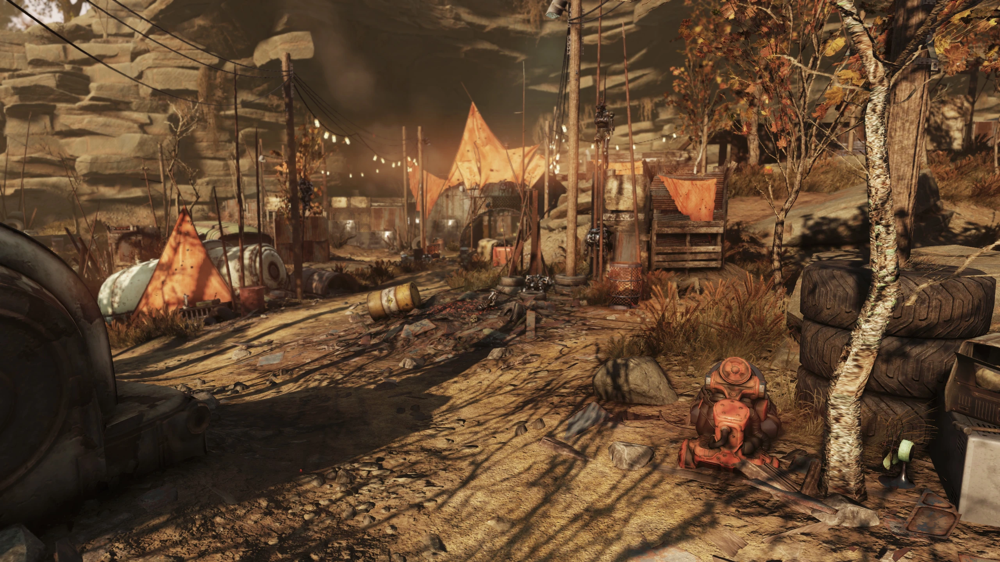
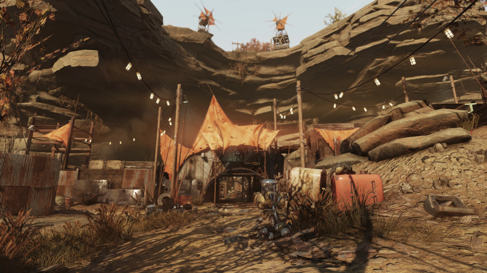
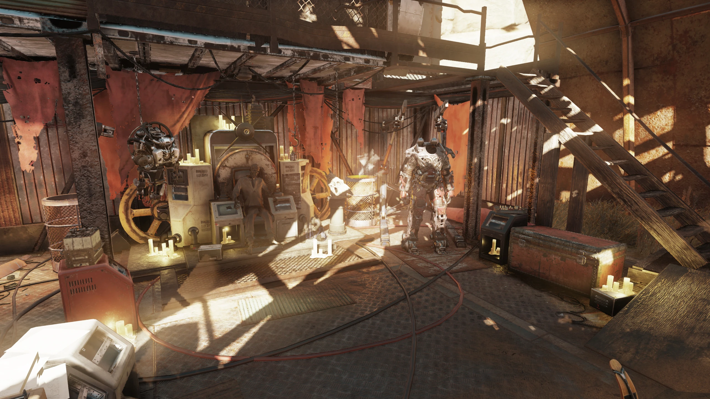
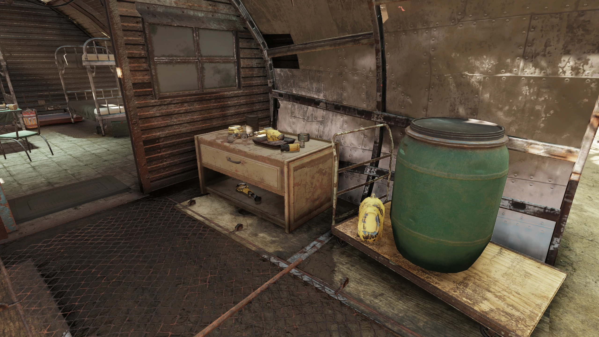
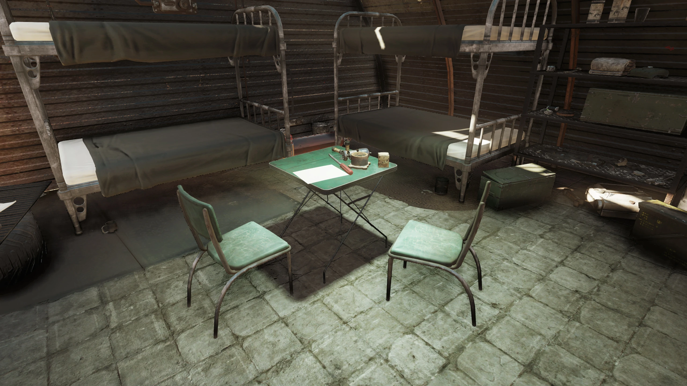
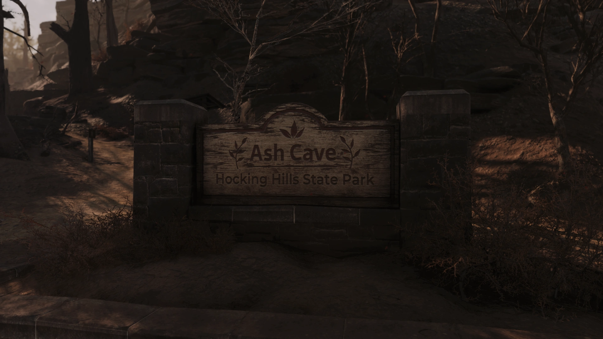
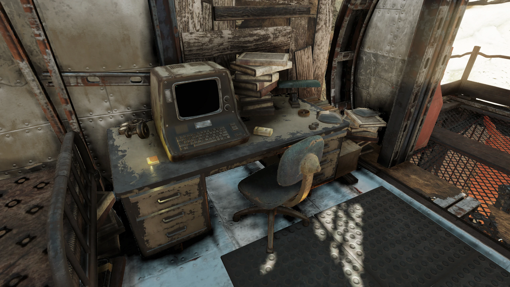
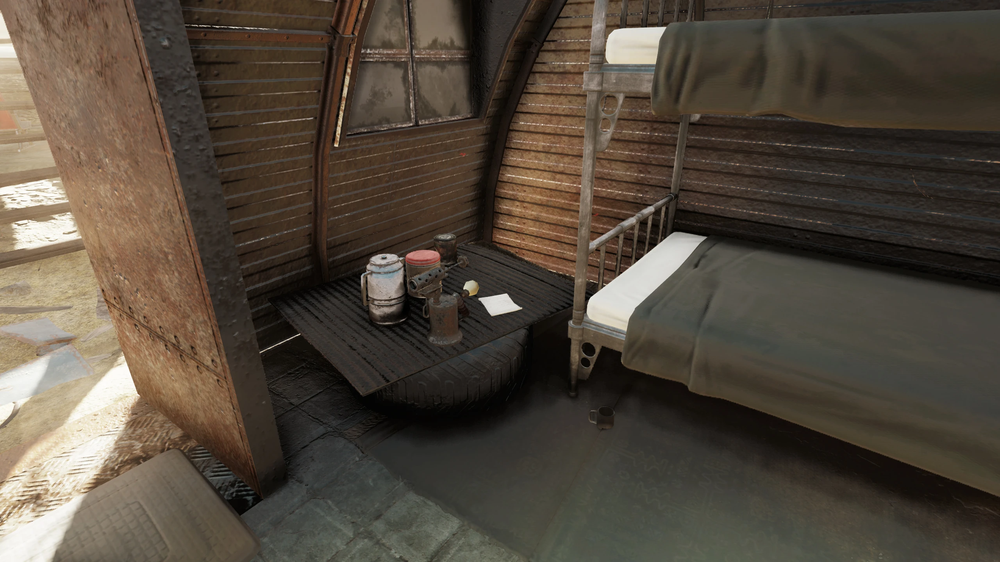

Ash Cave
アッシュ・ケイブ
概要
Ash Caveは、アパラチアのバーニング・スプリングス地域に位置する洞窟のロケーションである。Fallout 76の「Burning Springs」アップデートで登場する。
かつてホッキング・ヒルズ大学のフランクリン・メッター教授が率いたアッシュ・ケイバーズの本拠地であり、後にラスト・キングの勢力に吸収された。
背景
大戦後、荒廃したアテネから逃れたメッター教授は、2078年3月にこの洞窟を発見し、拠点として整備を始めた。彼は放浪者たちを集め、「テンパリング（鍛錬）」と呼ぶ独自の訓練体系を構築した。ケム（薬物）の常習使用を「合理的な適応」と位置づけ、パワーアーマーの運用体制を確立し、風力発電による融合コアの充電ネットワークを築き上げた。
教授は情け容赦のない統治を行い、慈悲を見せた最古参の部下ハーマンでさえ「粉砕された者」として追放・処刑した。しかし2089年末、病に冒された教授はラスト・キングの圧倒的な力を前に服従を選び、アッシュ・ケイバーズはラスト・キングの軍勢に合流した。
ターミナルエントリ
メッター教授のターミナル
風雨を凌げる場所が必要だった。我々が必要とする機械がそれを要求する。同様に、防御も必要だった。我々の戦利品を奪おうとするレイダーからの、そして手足を引きちぎる異形の者たちからの防御が。
武装と装甲を大規模に確保するまでは、伝統的な要塞に頼らねばならない。壁、見張り塔、そして門だ。
アッシュ・ケイブは我々の目的に理想的だ。その広大な空間は大部分の攻撃経路から身を守り、高い天井は太陽と嵐の両方から遮ってくれる。
アテネとの近さは、サルベージの機会を豊富に提供してくれる。ただし、あの忌まわしい死者の街の奥深くへ入り込まぬよう警告せねばならない。もちろん、装備がそれに値するなら別だが。
集積回路と天秤にかけた時、彼らの命一つの価値とは何だろう？
膨大な量の薬物が必要になる。
サルベージで賄える量をはるかに超えている。我々自身の研究所が必要だ。
原料の調達が唯一の課題ではない。逸脱や実験を助長しない形で化学製造の技術を教えなければならない。安定した結果が必要だ。
また、精神活性物質を習慣的に体内に注入することが常識的な必要性であり、荒野が我々全員に要求する鍛錬の自然で論理的な側面であると、人々を納得させなければならない。
融合コアの充電のため、風車のネットワークを設計した。パワーアーマーの日常的配備を許可する運用方針を採用できるようになるだろう。我々は繁栄する態勢に入れるはずだ。
我々の門へたどり着いた放浪者、あるいはサルベージ巡回隊が募集した者の十人に一人が、仲間として立つに十分な強靭さを証明するだろう。
パワーアーマーを持つ現在の使用者の死亡、あるいは不慮の最期の際に、スーツを纏う機会が与えられるだろう。自分のアーマーの中で生き残れないなら、それに値する資格をどうして主張できようか？
最年少の者たち、「グリーストラップ」と呼んでいる子供たちさえ、小さな手で摩耗したアクチュエーターに潤滑剤を塗ることを誇りにしている。人々がこれほど目的に団結している姿を見ると、大いなる幸福を感じる。
巡回中に非武装の標的を外すことが多いとの報告を受けている。数値を分析したところ、無防備な標的に対するハーマンの命中率低下は統計的に有意だ。サルベージ巡回中に遭遇した子供を殺さずに逃がしたという噂さえ聞く。
明日の夜明けに、ハーマンを「粉砕された者」と宣言する。武器と装甲を剥ぎ、北東の異形の洞窟の外にある杭に縛り付ける。その骨は、我々の領土に入る者への、そして慈悲の亡霊を思考に宿す者への警告となるだろう。
私は病んでいる。確実に死にゆく。アブラクソダインの遺物が体内で暴れている。春を見届けることはないだろう。
しかし、恐れはない。私は故郷より長く生き、よく生きた。血と塵とスクラップから、永続する民を鍛え上げた。未来を。
この遺産を守るため、ラスト・キングに服従することを決めた。さもなくば無意味な、壮絶ではあるが、破滅を招くことになる。明朝、彼の条件を受け入れ、アッシュ・ケイバーズが彼の陣営に加わることを伝える。
交代の衛兵は、領土から南へ向かう、途方もなく大きな、緑がかった肌の男(?)を目撃したと報告した。
これはここ数ヶ月で3度目の「緑の男」の目撃報告だ。サルベージ班からは聞いていたが、信じていなかった。そして今、私の玄関先に現れた。知性を持っている可能性はあるのか？
各風車サイトの警備を増強するよう命じた。我々に余裕はない。
発見できるホロテープ
フランクリン・メッター教授：略奪者たちは廃墟と化したアテネからの道で私を見つけた。世界の残骸…私の人生の残骸の中をよろめきながら。*咳き込む*
初期の日々は困難だった。この殺人者たち、今や私の民。大学の工学部とはかけ離れている。彼らは私が生存を彫り出す未加工の粘土だ。
大地は汚染されている。不浄だ。爆弾。アブラクソダインの製品。放射化され、気化し、広範囲に撒き散らされた…飽和点をはるかに超えて。
私は信奉者たちに自らを鍛える方法を教える。この世界での生活に適応するために。私が許す知識を与え、それ以上は与えない。
この洞窟の影で、彼らにショーを見せる。火と硫黄を！彼らを硬化させ、研ぎ澄まし、永続するものへと鍛え上げる。*咳き込む*
発見できるメモ
マギー、
もう丸1年になるが、まだ生きてるな。アテネで失ったかと思ったが、戻ってきた。足も失わなかった、みんなダメだと思ってたのにな。約束は約束だ、話の続きを教えよう。教授を見つけたあの日の続きが知りたいんだろ。
ハーマンは将校から盗んだレーザーピストルを持ってて、本物の逸品だった。それを老人の頭に突きつけた。本と薬を渡せと。聞くところによると、老人はただ睨みつけて、フォトニック・チャンバーが劣化する前にどこまで行けると思うのか、クリスタル配列のアラインメントを最後にいつ確認したのか、と聞いたそうだ。
次々と質問が続いた。波長の最適化は考えたか？アーマーはどうする？融合セルの容量を損なわずにどう充電する？答えが欲しいか？何人殺すつもりだ？老人にはこう提案した：「この本を持っていけ—理解できないだろうがな。あるいは武器を下ろして私と来い。そうすればとても重要な男になれる。」
とにかく、そう聞いている。それ以来ずっと、何だかんだ言って教授について行ってるんだ。
ーラッキー
「この荒野に放り出された時、お前たちは生き残る能力がなかった。肌は柔らかく、目は太陽の眩しさや殺戮の電磁放射線から逸らしていた。弱かった。まだ鍛えられていなかった。
だが希望は残っている。試されていない者もまだ鍛えられうるということ。救われうるということ！
ポリラミネートと耐熱セラミクスを纏い、臓器を生命力を高める薬剤に浸すのだ！帰還であり、再生だ！」
ーフランクリン・メッター教授、2080年4月8日、アッシュの洞窟の影にて小ハーマンに伝える
「亀がウサギを追い越すと賭ける愚か者がどこにいる？
同様に、生まれたままのむき出しの大脳皮質、中枢神経系が、科学の神経強化剤の恩恵を受けたシナプスと同等に鍛えられ、俊敏で、明晰だと賭けるのか？
歴史上最も偉大な精神の労苦が、研究室から研究室へ受け継がれ、製造できること…注射して瓶詰めにできることを否定する勇気があるか！
お前たちは強化される！」
ーフランクリン・メッター教授、2081年4月13日
「では、我々の武器が必要とする電力を、兵士たちの鉄の外殻が要求する電力を、どう供給するのか？融合の光の最後の瞬きに至るまで、いかにして運命を掴み取るのか？
私は見た。夢の中で見た。
空そのものの喧騒から引き出すのだ。衝突と闘争の普遍的法則から。大気そのものが暴力で満ちている。ぶつかり合う雷雲、圧力の波、容赦ない暴風。完璧で絶え間ない パスカルとミリバールの嵐が、手綱を噛む馬のように待っている。
我々は風を捕える機械を建造する。その力を集め、分配する。」
ーフランクリン・メッター教授、2081年7月7日
登場作品
Ash CaveはFallout 76のBurning Springsアップデートにのみ登場する。
実在のアッシュ・ケイブ（オハイオ州ホッキング・ヒルズ州立公園内）をモデルにしている。
GALLERY








メッター教授のターミナルエントリは、Burning Springsで最も読み応えのあるテキストの一つです。大学教授が荒野の暴君へと変貌していく過程が、彼自身の格調高い文体で綴られているのが不気味で魅力的。
「テンパリング」という概念を軸に、薬物・パワーアーマー・風力発電と、独自の文明を築き上げた手腕は見事としか言えません。
しかし慈悲を見せたハーマンの追放と処刑の記録は、教授の冷酷さを端的に示しています。
最後にラスト・キングに降伏する記録は、病で死にゆく老人の遺産への執着が切なく、Falloutらしい複雑な人物像を描いています。
This article was created by translating and editing Ash Cave from Nukapedia: The Fallout Wiki.
Licensed under the Creative Commons Attribution-Share Alike License (CC BY-SA 3.0).
コミュニティ維持のため、寄付を受け付けております。
> COMMENTS_